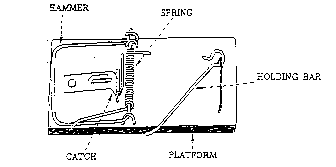
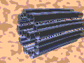
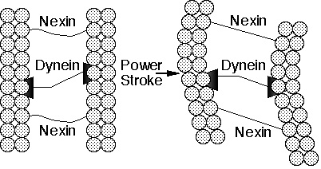

[1] How do we see? In the 19th century the anatomy of the eye was known in great detail and the sophisticated mechanisms it employs to deliver an accurate picture of the outside world astounded everyone who was familiar with them. Scientists of the 19th century correctly observed that if a person were so unfortunate as to be missing one of the eye's many integrated features, such as the lens, or iris, or ocular muscles, the inevitable result would be a severe loss of vision or outright blindness. Thus it was concluded that the eye could only function if it were nearly intact.
[2] As Charles Darwin was considering possible objections to his theory of evolution by natural selection in The Origin of Species he discussed the problem of the eye in a section of the book appropriately entitled "Organs of Extreme Perfection and Complication." He realized that if in one generation an organ of the complexity of the eye suddenly appeared, the event would be tantamount to a miracle. Somehow, for Darwinian evolution to be believable, the difficulty that the public had in envisioning the gradual formation of complex organs had to be removed.
[3] Darwin succeeded brilliantly, not by actually describing a real pathway that evolution might have used in constructing the eye, but rather by pointing to a variety of animals that were known to have eyes of various constructions, ranging from a simple light sensitive spot to the complex vertebrate camera eye, and suggesting that the evolution of the human eye might have involved similar organs as intermediates.
[4] But the question remains, how do we see? Although Darwin was able to persuade much of the world that a modern eye could be produced gradually from a much simpler structure, he did not even attempt to explain how the simple light sensitive spot that was his starting point actually worked. When discussing the eye Darwin dismissed the question of its ultimate mechanism1:
How a nerve comes to be sensitive to light hardly concerns us more than how life itself originated.
He had an excellent reason for declining to answer the question: 19th century science had not progressed to the point where the matter could even be approached. The question of how the eye works--that is, what happens when a photon of light first impinges on the retina--simply could not be answered at that time. As a matter of fact, no question about the underlying mechanism of life could be answered at that time. How do animal muscles cause movement? How does photosynthesis work? How is energy extracted from food? How does the body fight infection? Nobody knew.
[5] Now, it appears to be a characteristic of the human mind that when it is unconstrained by knowledge of the mechanisms of a process, then it seems easy to imagine simple steps leading from non-function to function. A happy example of this is seen in the popular comic strip Calvin and Hobbes. Little boy Calvin is always having adventures in the company of his tiger Hobbes by jumping in a box and traveling back in time, or grabbing a toy ray gun and "transmogrifying" himself into various animal shapes, or again using a box as a duplicator and making copies of himself to deal with worldly powers such as his mom and his teachers. A small child such as Calvin finds it easy to imagine that a box just might be able to fly like an airplane (or something), because Calvin does not know how airplanes work.
[6] A good example from the biological world of complex changes appearing to be simple is the belief in spontaneous generation. One of the chief proponents of the theory of spontaneous generation during the middle of the 19th century was Ernst Haeckel, a great admirer of Darwin and an eager popularizer of Darwin's theory. From the limited view of cells that 19th century microscopes provided, Haeckel believed that a cell was a "simple little lump of albuminous combination of carbon," 2 not much different from a piece of microscopic Jello. Thus it seemed to Haeckel that such simple life could easily be produced from inanimate material. In 1859, the year of the publication of The Origin of Species, an exploratory vessel, H.M.S. Cyclops, dredged up some curious looking mud from the sea bottom. Eventually Haeckel came to observe the mud and thought that it closely resembled some cells he had seen under a microscope. Excitedly he brought this to the attention of Thomas Henry Huxley, Darwin's great friend and defender. Huxley, too, became convinced that it was Urschleim (that is, protoplasm), the progenitor of life itself, and Huxley named the mud Bathybius Haeckelii after the eminent proponent of abiogenesis.
[7] The mud failed to grow. In later years, with the development of new biochemical techniques and improved microscopes, the complexity of the cell was revealed. The "simple lumps" were shown to contain thousands of different types of organic molecules, proteins, and nucleic acids, many discrete subcellular structures, specialized compartments for specialized processes, and an extremely complicated architecture. Looking back from the perspective of our time, the episode of Bathybius Haeckelii seems silly or downright embarrassing, but it shouldn't. Haeckel and Huxley were behaving naturally, like Calvin: since they were unaware of the complexity of cells, they found it easy to believe that cells could originate from simple mud.
[8] Throughout history there have been many other examples, similar to that of Haeckel, Huxley and the cell, where a key piece of a particular scientific puzzle was beyond the understanding of the age. In science there is even a whimsical term for a machine or structure or process that does something, but the actual mechanism by which it accomplishes its task is unknown: it is called a 'black box.' In Darwin's time all of biology was a black box: not only the cell, or the eye, or digestion, or immunity, but every biological structure and function because, ultimately, no one could explain how biological processes occurred.
[9] Ernst Mayr, the prominent biologist, historian, and guiding force behind the neo-Darwinian synthesis, has pointed out that 3:
Any scientific revolution has to accept all sorts of black boxes, for if one had to wait until all black boxes are opened, one would never have any conceptual advances.
That is true. But in earlier days when black boxes were finally opened science, and sometimes the whole world, appeared to change. Biology has progressed tremendously due to the model that Darwin put forth. But the black boxes Darwin accepted are now being opened, and our view of the world is again being shaken.
[10] In order to understand the molecular basis of life it is necessary to understand how things called "proteins" work. Although most people think of protein" as something you eat, one of the major food groups, when they reside in the body of an uneaten animal or plant proteins serve a different purpose. Proteins are the machinery of living tissue that builds the structures and carries out the chemical reactions necessary for life. For example, the first of many steps necessary for the conversion of sugar to biologically-usable forms of energy is carried out by a protein called hexokinase. Skin is made in large measure of a protein called collagen. When light impinges on your retina it interacts first with a protein called rhodopsin. As can be seen even by this limited number of examples proteins carry out amazingly diverse functions. However, in general a given protein can perform only one or a few functions: rhodopsin cannot form skin and collagen cannot interact usefully with light. Therefore a typical cell contains thousands and thousands of different types of proteins to perform the many tasks necessary for life, much like a carpenter's workshop might contain many different kinds of tools for various carpentry work.
[11] What do these versatile tools look like? The basic structure of proteins is quite simple: they are formed by hooking together in a chain discrete subunits called amino acids. Although the protein chain can consist of anywhere from about 50 to about 1,000 amino acid links, each position can only contain one of twenty different amino acids. In this way they are much like words: words can come in various lengths but they are made up from a discrete set of 26 letters. Now, a protein in a cell does not float around like a floppy chain; rather, it folds up into a very precise structure which can be quite different for different types of proteins. When all is said and done two different amino sequences--two different proteins--can be folded to structures as specific as and different from each other as a three-eighths inch wrench and a jigsaw. And like the household tools, if the shape of the proteins is significantly warped then they fail to do their jobs.
[12] In general, biological processes on the molecular level are performed by networks of proteins, each member of which carries out a particular task in a chain.
[13] Let us return to the question, how do we see? Although to Darwin the primary event of vision was a black box, through the efforts of many biochemists an answer to the question of sight is at hand. 4 When light strikes the retina a photon is absorbed by an organic molecule called 11-cis-retinal, causing it to rearrange within picoseconds to trans-retinal. The change in shape of retinal forces a corresponding change in shape of the protein, rhodopsin, to which it is tightly bound. As a consequence of the protein's metamorphosis, the behavior of the protein changes in a very specific way. The altered protein can now interact with another protein called transducin. Before associating with rhodopsin, transducin is tightly bound to a small organic molecule called GDP, but when it binds to rhodopsin the GDP dissociates itself from transducin and a molecule called GTP, which is closely related to, but critically different from, GDP, binds to transducin.
[14] The exchange of GTP for GDP in the transducinrhodopsin complex alters its behavior. GTP-transducinrhodopsin binds to a protein called phosphodiesterase, located in the inner membrane of the cell. When bound by rhodopsin and its entourage, the phosphodiesterase acquires the ability to chemically cleave a molecule called cGMP. Initially there are a lot of cGMP molecules in the cell, but the action of the phosphodiesterase lowers the concentration of cGMP. Activating the phosphodiesterase can be likened to pulling the plug in a bathtub, lowering the level of water.
[15] A second membrane protein which binds cGMP, called an ion channel, can be thought of as a special gateway regulating the number of sodium ions in the cell. The ion channel normally allows sodium ions to flow into the cell, while a separate protein actively pumps them out again. The dual action of the ion channel and pump proteins keeps the level of sodium ions in the cell within a narrow range. When the concentration of cGMP is reduced from its normal value through cleavage by the phosphodiesterase, many channels close, resulting in a reduced cellular concentration of positively charged sodium ions. This causes an imbalance of charges across the cell membrane which, finally, causes a current to be transmitted down the optic nerve to the brain: the result, when interpreted by the brain, is vision.
[16] If the biochemistry of vision were limited to the reactions
listed above, the cell would quickly deplete its supply of 11-cis-retinal
and
cGMP while also becoming depleted of sodium ions. Thus a system is
required to limit the signal that is generated and restore the
cell to its original state; there are several mechanisms which do
this. Normally, in the dark, the ion channel, in addition to
sodium ions, also allows calcium ions to enter the cell; calcium
is pumped back out by a different protein in order to maintain a
constant intracellular calcium concentration. However, when cGMP
levels fall, shutting down the ion channel and decreasing the
sodium ion concentration, calcium ion concentration is also
decreased. The phosphodiesterase enzyme, which destroys cGMP, is
greatly slowed down at lower calcium concentration. Additionally,
a protein called guanylate cyclase begins to resynthesize cGMP
when calcium levels start to fall. Meanwhile, while all of this is
going on, metarhodopsin II is chemically modified by an enzyme
called rhodopsin kinase, which places a phosphate group on its
substrate. The modified rhodopsin is then bound by a protein
dubbed arrestin, which prevents the rhodopsin from further
activating transducin. Thus the cell contains mechanisms to limit
the amplified signal started by a single photon.
[17] Trans-retinal eventually falls off of the rhodopsin molecule and must be reconverted to 11-cis-retinal and again bound by opsin to regenerate rhodopsin for another visual cycle. To accomplish this trans-retinal is first chemically modified by an enzyme to transretinol, a form containing two more hydrogen atoms. A second enzyme then isomerizes the molecule to 11-cis-retinol. Finally, a third enzyme removes the previouslyadded hydrogen atoms to form 11-cis-retinal, and the cycle is complete.
[18] Although many details of the biochemistry of vision have not been cited here, the overview just seen is meant to demonstrate that, ultimately, this is what it means to 'explain' vision. This is the level of explanation that Biological science eventually must aim for. In order to say that some function is understood, every relevant step in the process must be elucidated. The relevant steps in biological processes occur ultimately at the molecular level, so a satisfactory explanation of a biological phenomenon such as sight, or digestion, or immunity, must include a molecular explanation. It is no longer sufficient, now that the black box of vision has been opened, for an 'evolutionary explanation' of that power to invoke only the anatomical structures of whole eyes, as Darwin did in the 19th century and as most popularizers of evolution continue to do today. Anatomy is, quite simply, irrelevant. So is the fossil record. It does not matter whether or not the fossil record is consistent with evolutionary theory, any more than it mattered in physics that Newton's theory was consistent with everyday experience. The fossil record has nothing to tell us about, say, whether or how the interactions of 11-cis-retinal with rhodopsin, transducin, and phosphodiesterase could have developed step-by-step. Neither do the patterns of biogeography matter, or of population genetics, or the explanations that evolutionary theory has given for rudimentary organs or species abundance.
[19] "How a nerve comes to be sensitive to light hardly concerns us more than how life itself originated," said Darwin in the 19th century. But both phenomena have attracted the interest of modern biochemistry. The story of the slow paralysis of research on life's origin is quite interesting, but space precludes its retelling here. Suffice it to say that at present the field of origin-of-life studies has dissolved into a cacophony of conflicting models, each unconvincing, seriously incomplete, and incompatible with competing models. In private even most evolutionary biologists will admit that science has no explanation for the beginning of life. 5
[20] The purpose of this paper is to show that the same problems which beset origin-of-life research also bedevil efforts to show how virtually any complex biochemical system came about. Biochemistry has revealed a molecular world which stoutly resists explanation by the same theory that has long been applied at the level of the whole organism. Neither of Darwin's black boxes--the origin of life or the origin of vision or other complex biochemical systems--has been accounted for by his theory.
[21] In The Origin of Species Darwin stated 6:
If it could be demonstrated that any complex organ existed which could not possibly have been formed by numerous, successive, slight modifications, my theory would absolutely break down.
A system which meets Darwin's criterion is one which exhibits irreducible complexity. By irreducible complexity I mean a single system which is composed of several interacting parts that contribute to the basic function, and where the removal of any one of the parts causes the system to effectively cease functioning. An irreducibly complex system cannot be produced gradually by slight, successive modifications of a precursor system, since any precursor to an irreducibly complex system is by definition nonfunctional. Since natural selection requires a function to select, an irreducibly complex biological system, if there is such a thing, would have to arise as an integrated unit for natural selection to have anything to act on. It is almost universally conceded that such a sudden event would be irreconcilable with the gradualism Darwin envisioned. At this point, however, 'irreducibly complex' is just a term, whose power resides mostly in its definition. We must now ask if any real thing is in fact irreducibly complex, and, if so, then are any irreducibly complex things also biological systems.
[22] Consider the humble mousetrap (Figure 1). The mousetraps that my family uses in our home to deal with unwelcome rodents consist of a number of parts. There are: (1) a flat wooden platform to act as a base; (2) a metal hammer, which does the actual job of crushing the little mouse; (3) a wire spring with extended ends to press against the platform and the hammer when the trap is charged; (4) a sensitive catch which releases when slight pressure is applied; and (5) a metal bar which holds the hammer back when the trap is charged and connects to the catch. There are also assorted staples and screws to hold the system together.

Figure 1. A household mousetrap. The working parts of the trap are labeled. If any of the parts are missing the trap does not function.
[23] If any one of the components of the mousetrap (the base, hammer, spring, catch, or holding bar) is removed, then the trap does not function. In other words, the simple little mousetrap has no ability to trap a mouse until several separate parts are all assembled.
[24] Because the mousetrap is necessarily composed of several parts, it is irreducibly complex. Thus, irreducibly complex systems exist.
[25] Now, are any biochemical systems irreducibly complex? Yes, it turns out that many are.
[26] Earlier we discussed proteins. In many biological structures proteins are simply components of larger molecular machines. Like the picture tube, wires, metal bolts and screws that comprise a television set, many proteins are part of structures that only function when virtually all of the components have been assembled. A good example of this is a cilium. 7

Figure 2a. Animation of a Cilium
[27] Cilia are hairlike organelles on the surfaces of many animal and lower plant cells that serve to move fluid over the cell's surface or to "row" single cells through a fluid. In humans, for example, epithelial cells lining the respiratory tract each have about 200 cilia that beat in synchrony to sweep mucus towards the throat for elimination. A cilium consists of a membrane-coated bundle of fibers called an axoneme. An axoneme contains a ring of 9 double microtubules surrounding two central single microtubules. Each outer doublet consists of a ring of 13 filaments (subfiber A) fused to an assembly of 10 filaments (subfiber B). The filaments of the microtubules are composed of two proteins called alpha and beta tubulin. The 11 microtubules forming an axoneme are held together by three types of connectors: subfibers A are joined to the central microtubules by radial spokes; adjacent outer doublets are joined by linkers that consist of a highly elastic protein called nexin; and the central microtubules are joined by a connecting bridge. Finally, every subfiber A bears two arms, an inner arm and an outer arm, both containing the protein dynein.
[28] But how does a cilium work? Experiments have indicated that ciliary motion results from the chemically-powered "walking" of the dynein arms on one microtubule up the neighboring subfiber B of a second microtubule so that the two microtubules slide past each other (Figure 2a and b). However, the protein cross-links between microtubules in an intact cilium prevent neighboring microtubules from sliding past each other by more than a short distance. These cross-links, therefore, convert the dynein-induced sliding motion to a bending motion of the entire axoneme.

Figure 2b. Schematic drawing of part of a cilium. The power stroke of the motor protein, dynein, attached to one microtubule, against subfiber B of a neighboring microtubule causes the fibers to slide past each other. The flexible linker protein, nexin, converts the sliding motion to a bending motion.
[29] Now, let us sit back, review the workings of the cilium, and consider what it implies. Cilia are composed of at least a half dozen proteins: alpha-tubulin, beta-tubulin, dynein, nexin, spoke protein, and a central bridge protein. These combine to perform one task, ciliary motion, and all of these proteins must be present for the cilium to function. If the tubulins are absent, then there are no filaments to slide; if the dynein is missing, then the cilium remains rigid and motionless; if nexin or the other connecting proteins are missing, then the axoneme falls apart when the filaments slide.
[30] What we see in the cilium, then, is not just profound complexity, but also irreducible complexity on the molecular scale. Recall that by "irreducible complexity" we mean an apparatus that requires several distinct components for the whole to work. My mousetrap must have a base, hammer, spring, catch, and holding bar, all working together, in order to function. Similarly, the cilium, as it is constituted, must have the sliding filaments, connecting proteins, and motor proteins for function to occur. In the absence of any one of those components, the apparatus is useless.
[31] The components of cilia are single molecules. This means that there are no more black boxes to invoke; the complexity of the cilium is final, fundamental. And just as scientists, when they began to learn the complexities of the cell, realized how silly it was to think that life arose spontaneously in a single step or a few steps from ocean mud, so too we now realize that the complex cilium can not be reached in a single step or a few steps. But since the complexity of the cilium is irreducible, then it can not have functional precursors. Since the irreducibly complex cilium can not have functional precursors it can not be produced by natural selection, which requires a continuum of function to work. Natural selection is powerless when there is no function to select. We can go further and say that, if the cilium can not be produced by natural selection, then the cilium was designed.
[32] Other examples of irreducible complexity abound, including aspects of protein transport, blood clotting, closed circular DNA, electron transport, the bacterial flagellum, telomeres, photosynthesis, transcription regulation, and much more. Examples of irreducible complexity can be found on virtually every page of a biochemistry textbook. But if these things cannot be explained by Darwinian evolution, how has the scientific community regarded these phenomena of the past forty years? A good place to look for an answer to that question is in the Journal of Molecular Evolution. JME is a journal that was begun specifically to deal with the topic of how evolution occurs on the molecular level. It has high scientific standards, and is edited by prominent figures in the field. In a recent issue of JME there were published eleven articles; of these, all eleven were concerned simply with the analysis of protein or DNA sequences. None of the papers discussed detailed models for intermediates in the development of complex biomolecular structures. In the past ten years JME has published 886 papers. Of these, 95 discussed the chemical synthesis of molecules thought to be necessary for the origin of life, 44 proposed mathematical models to improve sequence analysis, 20 concerned the evolutionary implications of current structures, and 719 were analyses of protein or polynucleotide sequences. There were zero papers discussing detailed models for intermediates in the development of complex biomolecular structures. This is not a peculiarity of JME. No papers are to be found that discuss detailed models for intermediates in the development of complex biomolecular structures in the Proceedings of the National Academy of Science, Nature, Science, the Journal of Molecular Biology or, to my knowledge, any journal whatsoever.
[33] Sequence comparisons overwhelmingly dominate the literature of molecular evolution. But sequence comparisons simply can't account for the development of complex biochemical systems any more than Darwin's comparison of simple and complex eyes told him how vision worked. Thus in this area science is mute. This means that when we infer that complex biochemical systems were designed, we are contradicting no experimental result, we are in conflict with no theoretical study. No experiments needs to be questioned, but the interpretation of all experiments must now be reexamined, just as the results of experiments that were consistent with a Newtonian view of the universe had to be reinterpreted when the waveparticle duality of matter was discerned.
[34] It is often said that science must avoid any conclusions which smack of the supernatural. But this seems to me to be both bad logic and bad science. Science is not a game in which arbitrary rules are used to decide what explanations are to be permitted. Rather, it is an effort to make true statements about physical reality. It was only about sixty years ago that the expansion of the universe was first observed. This fact immediately suggested a singular event--that at some time in the distant past the universe began expanding from an extremely small size. To many people this inference was loaded with overtones of a supernatural event--the creation, the beginning of the universe. The prominent physicist A.S. Eddington probably spoke for many physicists in voicing his disgust with such a notion 8:
Philosophically, the notion of an abrupt beginning to the present order of Nature is repugnant to me, as I think it must be to most; and even those who would welcome a proof of the intervention of a Creator will probably consider that a single windingup at some remote epoch is not really the kind of relation between God and his world that brings satisfaction to the mind.
Nonetheless, the Big Bang hypothesis was embraced by physics and over the years has proven to be a very fruitful paradigm. The point here is that physics followed the data where it seemed to lead, even though some thought the model gave aid and comfort to religion. In the present day, as biochemistry multiplies examples of fantastically complex molecular systems, systems which discourage even an attempt to explain how they may have arisen, we should take a lesson from physics. The conclusion of design flows naturally from the data; we should not shrink from it; we should embrace it and build on it.
[35] In concluding, it is important to realize that we are not inferring design from what we do not know, but from what we do know. We are not inferring design to account for a black box, but to account for an open box. A man from a primitive culture who sees an automobile might guess that it was powered by the wind or by an antelope hidden under the car, but when he opens up the hood and sees the engine he immediately realizes that it was designed. In the same way biochemistry has opened up the cell to examine what makes it run and we see that it, too, was designed.
[36] It was a shock to people of the nineteenth century when they discovered, from observations science had made, that many features of the biological world could be ascribed to the elegant principle of natural selection. It is a shock to us in the twentieth century to discover, from observations science has made, that the fundamental mechanisms of life cannot be ascribed to natural selection, and therefore were designed. But we must deal with our shock as best we can and go on. The theory of undirected evolution is already dead, but the work of science continues.
This paper was originally presented in the Summer of 1994 at the meeting ofthe C.S. Lewis Society, Cambridge University.
Copyright ©1997 Michael Behe.
All rights reserved. International copyright
secured.
File Date: 9.24.96
* Prof. Behe's original
document is here. Paragraph numbers in this
version added by Jeremy Anderson; no other changes
have been made.